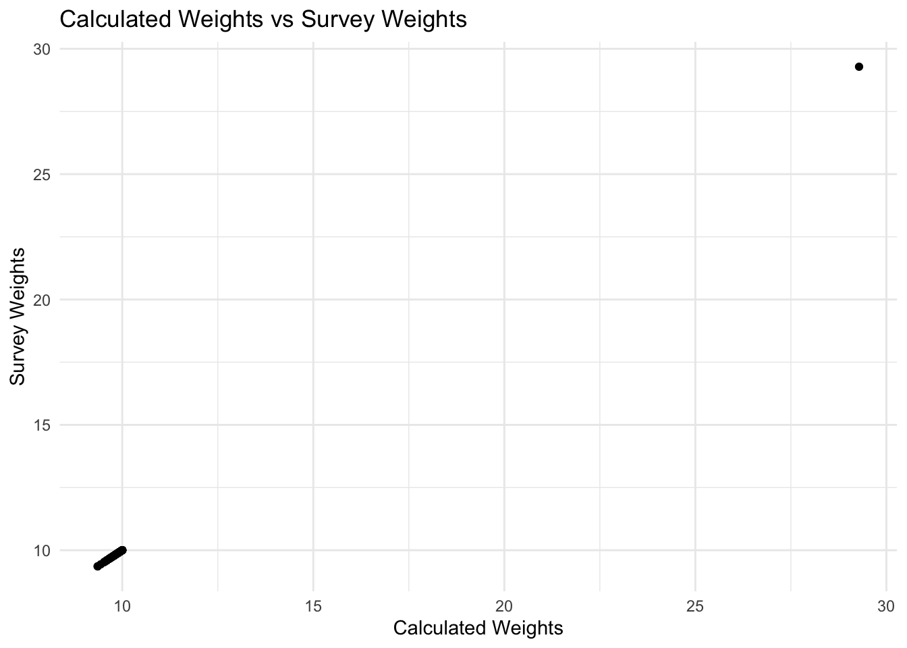

# Install required packages if not already installed
required_packages <- c(
"sae", "emdi", "saeTrafo", "hbsae", "SUMMER", "survey",
"dplyr", "tidyr", "purrr", "sf",
"ggplot2", "hrbrthemes", "GGally", "patchwork"
)
to_install <- setdiff(required_packages, rownames(installed.packages()))
if (length(to_install) > 0) {
install.packages(to_install)
}
# Install INLA for Bayesian SAE estimators
if (!isTRUE(requireNamespace("INLA", quietly = TRUE))) {
install.packages("INLA", repos=c(getOption("repos"),
INLA="https://inla.r-inla-download.org/R/stable"), dep=TRUE)
}
library(sae) # Small area estimation models
library(emdi) # Example datasets
library(saeTrafo) # For domain sizes
library(SUMMER) # Bayesian SAE
library(survey) # Survey designs
library(dplyr) # For data wrangling
library(tidyr) # For data wrangling
library(purrr) # For data wrangling
library(sf) # For mapping
library(ggplot2) # For visualisations
library(hrbrthemes) # For visualisations
library(GGally) # For visualisations
library(patchwork) # For visualisations
library(viridis) # For visualisations
library(cowplot) # For visualisationsMapping the Unseen: Small Area Estimation for Urban Analysis
Please, make sure you have R version 4.5.1 (2025-06-13) installed in your laptop. You can download it from here: https://cran.r-project.org/
Introduction
In this practical we will put into practice the concepts we learnt on the theoretical session of the workshop. Using survey data, we will calculate direct and model-based income estimators. We will explore the different alternatives available when implementing these methods, which will help us choose the most adequate option given data availability. To better understand the implications of using different models, we will compare the results of the estimates generated through different methods. You can access the .qmd document for this practical from this link.
Data
For this workshop we will be using the European Union Statistics on Income and Living Conditions (EU-SILC). Specifically, we will be using the Austrian EU-SILC data sets available through the emdi package. EU-SILC provides detailed information on attributes related to income, material deprivation, labour, housing, childcare, health, access to and use of services, and education.
From the package emdi we can load a set of data related to the EU-SILC survey. eusilcA_smp is the random independent sample, where each row represents one individual, and each column represents a unit-level attribute. In total, the sample comprises 1,945 individuals. eusilcA_popAgg comprises the area-level covariates for all domains1. eusilcA_pop is the total population – it comprises 25,000 observations which we will assume add up to the total population of Austria for this example. Finally, eusilcA_prox is the adjacency matrix for every district in Austria.
# Load data
data("eusilcA_smp") # Random independent Sample
data("eusilcA_popAgg") # Aggregated covariates at district level
data("eusilcA_pop") # Population level data
data("eusilcA_prox") # Adjacency matrix
data("eusilcA_smpAgg") # Aggregated sample data
# Recode the domain variable as character
eusilcA_smp$district <- droplevels(eusilcA_smp$district)
eusilcA_smp$district <- as.character(eusilcA_smp$district)Let us start by having a look at the sample data eusilcA_smp. Each row in the sample represents one individual, and for each of them we have information on a wide range of economic and demographic attributes. In this practical, our target variable will be the the equivalised household income (eqIncome), which represents the household income adjusted by household composition characteristics.
head(eusilcA_smp) eqIncome gender eqsize cash self_empl unempl_ben age_ben surv_ben
213 23485.32 male 2.5 33003.39 0.00 0 0 0
194 22704.46 male 2.0 20073.23 0.00 0 0 0
258 25946.34 female 1.0 0.00 24736.06 0 0 0
460 16152.54 male 2.1 19972.35 0.00 0 0 0
798 22587.48 male 1.5 21503.23 0.00 0 0 0
447 20437.04 male 2.0 22282.23 0.00 0 0 0
sick_ben dis_ben rent fam_allow house_allow cap_inv tax_adj state
213 0 0 0 0.00 0.00 17158.84 -10972.65 Burgenland
194 0 0 0 0.00 0.00 4.70 -940.77 Burgenland
258 0 0 0 0.00 1083.95 126.33 0.00 Burgenland
460 0 0 0 5247.33 0.00 195.32 0.00 Burgenland
798 0 0 0 2031.03 0.00 19.92 0.00 Burgenland
447 0 0 0 0.00 3312.42 0.00 0.00 Burgenland
district weight
213 Neusiedl am See 9.6875
194 Neusiedl am See 9.6875
258 Neusiedl am See 9.6875
460 Neusiedl am See 9.6875
798 Neusiedl am See 9.6875
447 Neusiedl am See 9.6875We can also have a look at the spatial distribution of the observations in the sample.
We see that the observations are unequally distributed across the different districts. We see higher sample sizes in larger cities, specially in Vienna, the capital and most populous city in the country. Furthermore, we have 24 districts that are not represented in the sample:
# Check if all districts in the population are in the sample
table(eusilcA_popAgg$Domain %in% unique(eusilcA_smp$district))
FALSE TRUE
24 70 # View all districts in the sample
t <- as.data.frame(unique(eusilcA_smp$district))
t unique(eusilcA_smp$district)
1 Neusiedl am See
2 Oberwart
3 Amstetten
4 Baden
5 Bruck an der Leitha
6 Gänserndorf
7 Hollabrunn
8 Korneuburg
9 Krems (Land)
10 Melk
11 Mistelbach
12 Mödling
13 Neunkirchen
14 Sankt Pölten (Land)
15 Sankt Pölten (Stadt)
16 Tulln
17 Wiener Neustadt (Land)
18 Wien
19 Klagenfurt (Land)
20 Klagenfurt (Stadt)
21 Sankt Veit an der Glan
22 Spittal an der Drau
23 Villach (Stadt)
24 Villach Land
25 Völkermarkt
26 Wolfsberg
27 Bruck-Mürzzuschlag
28 Deutschlandsberg
29 Graz-Umgebung
30 Graz (Stadt)
31 Hartberg-Fürstenfeld
32 Leibnitz
33 Leoben
34 Liezen
35 Murtal
36 Südoststeiermark
37 Voitsberg
38 Weiz
39 Braunau am Inn
40 Freistadt
41 Gmunden
42 Grieskirchen
43 Kirchdorf an der Krems
44 Linz-Land
45 Linz (Stadt)
46 Perg
47 Ried im Innkreis
48 Rohrbach
49 Schärding
50 Steyr-Land
51 Urfahr-Umgebung
52 Vöcklabruck
53 Wels-Land
54 Wels (Stadt)
55 Hallein
56 Salzburg-Umgebung
57 Salzburg (Stadt)
58 Sankt Johann im Pongau
59 Zell am See
60 Imst
61 Innsbruck (Land)
62 Innsbruck (Stadt)
63 Kitzbühel
64 Kufstein
65 Lienz
66 Schwaz
67 Bludenz
68 Bregenz
69 Dornbirn
70 FeldkirchThis is a relevant fact, since it will significantly affect the results and even the implementation of some SAE methods –remember that direct methods only generate outputs for areas with sampled observations.
Our target variable eqIncome follows a skewed distribution, with majority of individuals concentrated around lower income values (€ 20,000). We see very high agreement between sample values and population values.

Now that we have a better understanding of the data, we can start calculating our estimators.
Direct estimator
We will start by computing the most simple SAE estimator – the direct estimator. Direct estimators use only information collected from the domain of interest. They are relatively simple to obtain, since they use the sample weights and population values. However, they are very sensitive to small sample sizes.
To demonstrate how the direct estimator works, we will first compute it manually but following the Horvitz-Thompson estimator of domain means and its formula:
\[ \hat{\bar{Y_d}} = \frac{1}{N_d} \sum_{i \in s_d} w_{di}Y_{di} \]
where \(N_d\) is the population at the domain of interest \(d\); \(s_d\) is the set of sampled observations in domain \(d\); \(w_{di}\) is the sample weight for unit \(i\) in domain \(d\); and \(Y_{di}\) is the observation of the target variable for unit \(i\) in domain \(d\), for all \(i\) in \(S_d\).
Before we manually calculate the direct estimator, we will have a closer look at the sampling weights (\(w_{di}\)). These values represent the survey weigths, and we can find them in the weights column of our sample data set eusilcA_smp. In our survey, the weights are calculated as the inverse probabilities of selection or, in other words, the inverse of the likelyhood of an individual of the population being sampled. The value indicates the number of survey respondents in the population. This information can usually be found in the documentation of the survey, together with any clusters or strata that might have been defined by the surveyors.
These design weights can be calculated following this formula:
\[ weight_i = \frac{N_d}{n_d} \]
To manually calculate the weights, we can do the following:
# Check that each district has different weights assigned
# Count number of times each weigth repeats itself in the sample (in total we should get 70 rows)
weights_per_district <- eusilcA_smp |>
select(district, weight) |>
distinct()
nrow(weights_per_district)[1] 70# Calculate the weights manually
## Count population per district
pop_count <- eusilcA_pop |>
count(district, name = "N_d")
## Count sample per district
smp_count <- eusilcA_smp |>
count(district, name = "n_d")
## Merge and calculate weight
weight_check <- left_join(smp_count, pop_count, by = "district") |>
mutate(calculated_weight = N_d / n_d)
## Add weights from sample and check they are the same
weight_check |>
left_join(weights_per_district, by = "district") |>
mutate(weights_diff = calculated_weight - weight) district n_d N_d calculated_weight weight weights_diff
1 Amstetten 33 321 9.727273 9.727273 0.000000e+00
2 Baden 40 398 9.950000 9.950000 0.000000e+00
3 Bludenz 17 162 9.529412 9.529412 0.000000e+00
4 Braunau am Inn 29 282 9.724138 9.724138 -1.776357e-15
5 Bregenz 34 338 9.941176 9.941176 0.000000e+00
6 Bruck an der Leitha 27 265 9.814815 9.814815 0.000000e+00
7 Bruck-Mürzzuschlag 29 286 9.862069 9.862069 0.000000e+00
8 Deutschlandsberg 17 170 10.000000 10.000000 0.000000e+00
9 Dornbirn 22 219 9.954545 9.954545 0.000000e+00
10 Feldkirch 27 266 9.851852 9.851852 -1.776357e-15
11 Freistadt 19 187 9.842105 9.842105 1.776357e-15
12 Gmunden 29 286 9.862069 9.862069 0.000000e+00
13 Graz (Stadt) 74 734 9.918919 9.918919 0.000000e+00
14 Graz-Umgebung 41 402 9.804878 9.804878 0.000000e+00
15 Grieskirchen 18 180 10.000000 10.000000 0.000000e+00
16 Gänserndorf 28 274 9.785714 9.785714 0.000000e+00
17 Hallein 19 182 9.578947 9.578947 0.000000e+00
18 Hartberg-Fürstenfeld 26 252 9.692308 9.692308 -1.776357e-15
19 Hollabrunn 15 144 9.600000 9.600000 0.000000e+00
20 Imst 16 151 9.437500 9.437500 0.000000e+00
21 Innsbruck (Land) 45 445 9.888889 9.888889 0.000000e+00
22 Innsbruck (Stadt) 32 318 9.937500 9.937500 0.000000e+00
23 Kirchdorf an der Krems 16 160 10.000000 10.000000 0.000000e+00
24 Kitzbühel 17 164 9.647059 9.647059 -1.776357e-15
25 Klagenfurt (Land) 19 181 9.526316 9.526316 0.000000e+00
26 Klagenfurt (Stadt) 30 293 9.766667 9.766667 0.000000e+00
27 Korneuburg 25 245 9.800000 9.800000 1.776357e-15
28 Krems (Land) 16 160 10.000000 10.000000 0.000000e+00
29 Kufstein 27 269 9.962963 9.962963 1.776357e-15
30 Leibnitz 23 222 9.652174 9.652174 0.000000e+00
31 Leoben 18 173 9.611111 9.611111 0.000000e+00
32 Lienz 14 131 9.357143 9.357143 0.000000e+00
33 Liezen 23 225 9.782609 9.782609 0.000000e+00
34 Linz (Stadt) 55 546 9.927273 9.927273 0.000000e+00
35 Linz-Land 40 400 10.000000 10.000000 0.000000e+00
36 Melk 22 218 9.909091 9.909091 0.000000e+00
37 Mistelbach 22 211 9.590909 9.590909 0.000000e+00
38 Murtal 21 206 9.809524 9.809524 0.000000e+00
39 Mödling 33 327 9.909091 9.909091 0.000000e+00
40 Neunkirchen 25 244 9.760000 9.760000 0.000000e+00
41 Neusiedl am See 16 155 9.687500 9.687500 0.000000e+00
42 Oberwart 15 150 10.000000 10.000000 0.000000e+00
43 Perg 19 189 9.947368 9.947368 0.000000e+00
44 Ried im Innkreis 17 168 9.882353 9.882353 0.000000e+00
45 Rohrbach 17 163 9.588235 9.588235 0.000000e+00
46 Salzburg (Stadt) 46 459 9.978261 9.978261 0.000000e+00
47 Salzburg-Umgebung 46 452 9.826087 9.826087 0.000000e+00
48 Sankt Johann im Pongau 25 247 9.880000 9.880000 0.000000e+00
49 Sankt Pölten (Land) 36 359 9.972222 9.972222 -1.776357e-15
50 Sankt Pölten (Stadt) 15 149 9.933333 9.933333 0.000000e+00
51 Sankt Veit an der Glan 18 174 9.666667 9.666667 0.000000e+00
52 Schwaz 22 211 9.590909 9.590909 0.000000e+00
53 Schärding 17 162 9.529412 9.529412 0.000000e+00
54 Spittal an der Drau 25 242 9.680000 9.680000 0.000000e+00
55 Steyr-Land 17 170 10.000000 10.000000 0.000000e+00
56 Südoststeiermark 25 243 9.720000 9.720000 1.776357e-15
57 Tulln 28 277 9.892857 9.892857 -1.776357e-15
58 Urfahr-Umgebung 24 235 9.791667 9.791667 -1.776357e-15
59 Villach (Stadt) 19 184 9.684211 9.684211 0.000000e+00
60 Villach Land 20 199 9.950000 9.950000 0.000000e+00
61 Voitsberg 15 146 9.733333 9.733333 -1.776357e-15
62 Vöcklabruck 38 375 9.868421 9.868421 0.000000e+00
63 Völkermarkt 14 131 9.357143 9.357143 0.000000e+00
64 Weiz 25 246 9.840000 9.840000 0.000000e+00
65 Wels (Stadt) 17 169 9.941176 9.941176 0.000000e+00
66 Wels-Land 20 196 9.800000 9.800000 1.776357e-15
67 Wien 200 5857 29.285000 29.285000 3.552714e-15
68 Wiener Neustadt (Land) 22 215 9.772727 9.772727 0.000000e+00
69 Wolfsberg 17 168 9.882353 9.882353 0.000000e+00
70 Zell am See 27 266 9.851852 9.851852 -1.776357e-15The weights_diff column is the difference between our manually calculated weights (calculated_weight) and the survey weights (weight). We can see that the values are either zero or very close to zero (this minimal difference is due to rounding differences), which proves that the weights in the survey were calculated as the inverse probability of selection.
Let us now calculate the direct estimator manually:
# Calculate total population values for sampled domains
N <- pop_count |> filter(pop_count$district %in% eusilcA_smp$district)
# Add N to the sample data
dir_df <- eusilcA_smp |>
left_join(N, by = "district") |>
dplyr::select(district, eqIncome, weight, N_d)
# Calculate direct estimator manually for each domain
manual_direct <- dir_df |>
mutate(w_Y = weight * eqIncome) |>
group_by(district, N_d) |>
summarise(sum_wY = sum(w_Y, na.rm = TRUE), .groups = "drop") |>
mutate(dir_est_manual = sum_wY / N_d)
# See results
head(manual_direct)# A tibble: 6 × 4
district N_d sum_wY dir_est_manual
<chr> <int> <dbl> <dbl>
1 Amstetten 321 4879568. 15201.
2 Baden 398 9122834. 22922.
3 Bludenz 162 1955274. 12070.
4 Braunau am Inn 282 3437608. 12190.
5 Bregenz 338 12077145. 35731.
6 Bruck an der Leitha 265 6294628. 23753.Now, we will calculate the direct estimator using the sae package. The direct() function computes the Horvitz-Thompson estimator, the same one we have just manually computed. In addition to the direct estimator of the mean, the direct() function also gives us the standard deviation and coefficient of variation for each domain.
# Calculate the direct estimator manually
sae_direct <- sae::direct(
y = eusilcA_smp$eqIncome, # Individual values of the target variable
dom = eusilcA_smp$district, # Domain names
sweight = eusilcA_smp$weight, # Sampling weights
domsize = N, # Data frame with domain names and the corresponding population sizes.
replace = FALSE # Sampling conducted without replacement
)
# See results
head(sae_direct) Domain SampSize Direct SD CV
3 Amstetten 33 15201.15 2723.329 17.91528
4 Baden 40 22921.69 3564.496 15.55075
67 Bludenz 17 12069.59 2956.478 24.49526
39 Braunau am Inn 29 12190.10 2294.239 18.82051
68 Bregenz 34 35731.20 6084.361 17.02815
5 Bruck an der Leitha 27 23753.31 4475.512 18.84163Once we have calculated the direct estimator manually and using the pre-defined direct() function of the sae package, we can compare the results
# Join both into a single data frame
direct_compare <- left_join(
x = sae_direct[,c("Domain", "Direct")],
y = manual_direct[,c("district", "dir_est_manual")],
by = c("Domain" = "district")
)
# Compare values
ggplot(data = direct_compare) +
geom_point(aes(x = Direct, y = dir_est_manual)) +
labs(
title = "`sae` direct estimator vs manual direct estimator",
x = "`sae` direct estimator",
y = "Manual direct estimator"
) +
theme_minimal()
The plot shows a perfect match between the manually computed direct estimator values and the values from the direct() function of the sae package. Now that we have tested how the sae function works under the hood, we can plot our results.
# Add confidence intervals
sae_direct_ci <- sae_direct |>
mutate(
lower = Direct - 1.96 * SD,
upper = Direct + 1.96 * SD
)
# Plot
ggplot(sae_direct_ci, aes(x = reorder(Domain, Direct), y = Direct)) +
geom_errorbar(aes(ymin = lower, ymax = upper), colour = "gray", width = 0.3) +
geom_point(color = "#264653") +
coord_flip() +
labs(
x = "District",
y = "Equivalised income (Direct Estimate)",
title = "Direct Estimates of Equivalised Income (95% CI)"
) +
theme_minimal() +
theme(
axis.text.y = element_text(lineheight = 1.5) # Default is 1, try 1.3–2
)
The plot shows the value of the direct estimator and the confidence interval around that value. The confidence interval is calculated as the mean plus and minus the standard deviation multiplied by a constant value (1.96) that comes from the standard normal distribution at a 95% confidence interval. The interval represents all the possible ``true values’’ of our estimator. Longer error bars indicate higher uncertainty around the values –there is a larger range of potential true values– while shorter error bars indicate lower uncertainty –the range of potential values is more constrained.
The advantage of using the sae package is that it allows us to easily implement variations of the direct estimate calculation. In some cases, the survey might have been conducted following different surveying strategies in a more flexible way. For instance, it might be that the sampling was conducted with replacement, instead of without replacement [^2], or it could be that we do not have access to the domain of interest population sizes, in which case we would have to proceed differently to calculate our direct es
[^2] Survey sampling –selecting individuals from the total population for a survey– can be done with or without replacement. Sampling without replacement means that individuals from a domain can only be sampled once (imagine we take a ball out of a bag and we do not put it back); or with replacement (we take a ball out of the bag and put it back).
Footnotes
Remember that a domain refers to a small geographic area or a subpopulation (e.g., age group or income class) for which we want to calculate the small area estimation.↩︎